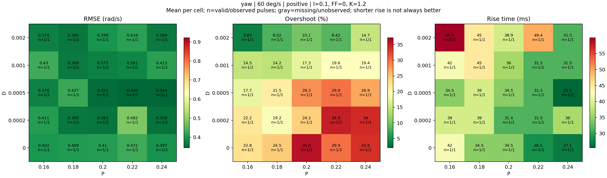
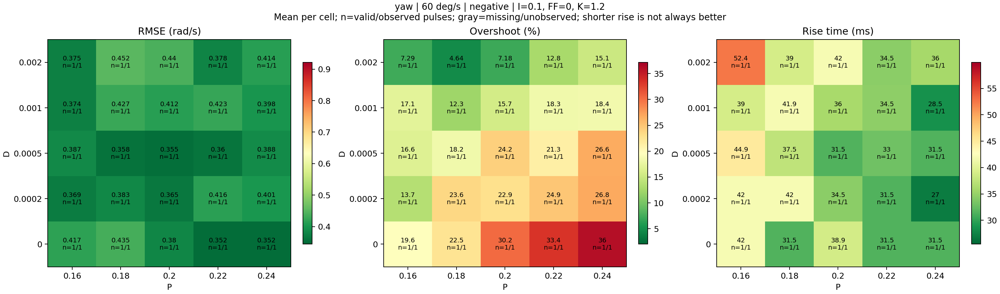
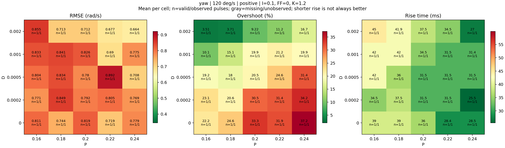
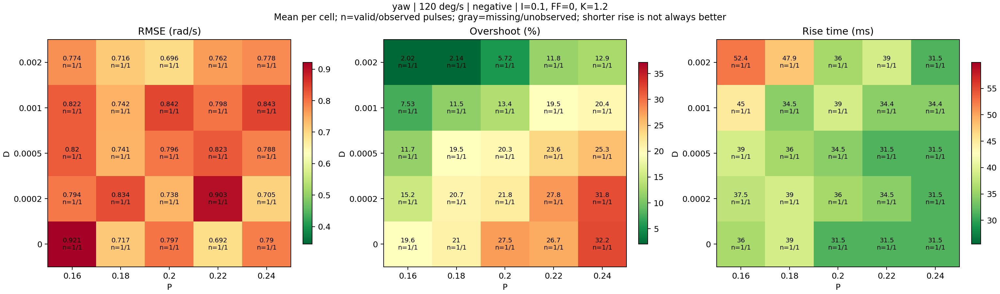

Axes: P horizontal, D vertical. Same color scale across amplitudes and directions in this session. Gray means missing or unobserved. n is valid / observed pulse count. Standard deviation is undefined for one sample. Smaller rise time alone is not a controller ranking.
Metrics CSV · Source


